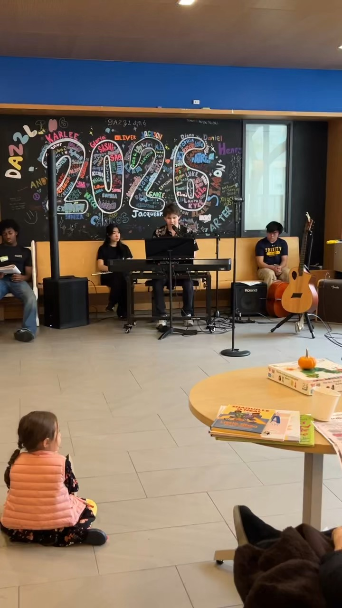

Singing
I frequently sing and am always looking to improve my voice. I love the feeling of music being generated from within you, which is why I love singing so much.
Creative Pursuits
Music has become one of my favorite ways to express ideas that words alone cannot capture. Whether I am singing, playing piano, or writing songs, each experience has helped me become a more creative and thoughtful person.
What began as an interest has gradually become one of the most meaningful parts of my life. Through choir, piano, and songwriting, I've learned discipline, collaboration, and how emotion can be communicated without saying a single word.
I frequently sing and am always looking to improve my voice. I love the feeling of music being generated from within you, which is why I love singing so much.
I have played since a child and feel connected to the ivory keys.
Songwriting has been my way of expressing myself and keeping myself grounded when high school and life was hard. It was a therapy turned into an intense hobby and I really love it.
Read the lyrics →I love performing more than anything — the adrenaline knocks sense into me and all of a sudden I flourish whenever I step foot on stage.
Lyrics from songs I have written. Recordings will follow.
Looking at these kids I think I’m still one of them...
Read the lyrics →I know you know that you’re my fantasy...
Read the lyrics →I thought that sin was good for me...
Read the lyrics →Listening closely is part of playing well. My review of Blood Moon by Apes & Androids follows an album built on distortion, distance, and disorientation — compositionally ambitious, vocally harmonious, and uneven in its lyrics.
Read the Review →Photos, sheet music, concert programs, and other moments from my musical journey.
